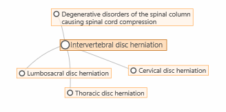
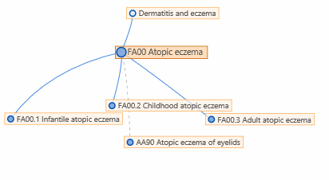
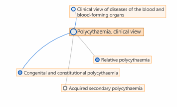

Visualization Modes
Foundation
When visualizing the foundation, all nodes look the same except the selected entity which has a darker background and larger circle. In this example the Intervertebral disc herniation is the selected entity
Linearizations
When browsing a linearization, only entities in that linearization are visible. Regular parent-child relations are shown in blue color. The foundation children that are not linearization children are shown with a dashed line in gray.
The color within the circle shows whether the entity is a grouping entity or a category with a code
Linearization within foundation
If you click on the button, the system displays the system shows you the foundation but highlighting the linearization within the foundation.In this mode, the entities that are in the linearization has a blue circle whereas entities that are not in the linearization has a gray circle. As in the linearization view, the color inside circle shows whether the entity is a grouping or a codable category
The blue lines show the linearization parents where as the gray lines are other parent-child relations in the foundation
In this example, "Polycythaemia" has 3 children in the foundation.
One of them (the one with the gray circle) is not included in the linearization.
"Relative polycythaemia" is included in the linearization but the linearization parent is elsewhere (blue node with gray connection).
The third one is a proper linearization children (blue circle with blue line)
More information on the visualization feature is available in the User Guide